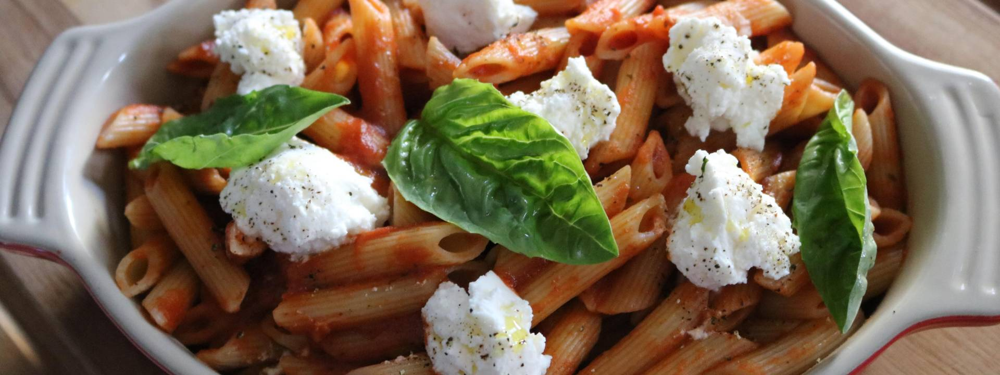

You need a basil to make this simple marinara.
Use basil and not anything else or you will be in trouble.
Ingredients
Yields 2 Quarts
- 2 28 Oz Cans of Peeled San Marazano Tomatoes
- 1 Large Yellow Onion, Julienned
- 6 Garlic Gloves, Sliced Thin
- 6 Basil Leafs, Torn
- 2 Tablespoons Tomato Paste
- 1 Cup Red Wine
- 1/8 Cup Olive Oil
- Salt & Pepper to Taste
COOKING INSTRUCTIONS
- In stockpot, over medium low heat, add oil and warm thoroughly.
- Add julienned onions, and season with salt and pepper.
- Sweat onions until soft and translucent, avoiding any scorching or color (approx. 10 – 12 minutes).
- Add thinly sliced garlic, sweat for additional 3 minutes, being sure not to burn the garlic at all.
- Add torn basil leaves and allow to wilt (approx. 2 min).
- Add tomato paste and cook off for 3- 5 minutes.
- Turn the heat up to medium high; deglaze the pot with red wine.
- Reduce by half approx. 3-5 minutes.
- Return heat to medium low and add the san marazano tomatoes.
- Cook on medium low heat for 90 minutes.
- Remove sauce from heat and using an immersion blender or in small batches in a stand up blender, blend the
sauce until desired consistency achieved.
- Season the sauce with salt and pepper to taste.
ASSEMBLY
- Boil desired pasta according to package instructions. Be sure to SALT YOUR WATER!
- Drain pasta and toss with marinara sauce that has been heated thoroughly.
- Arrange in serving vessel, adding ricotta cheese and basil to the top of the pasta. Season the cheese with
salt, black pepper and olive oil. Don’t have ricotta? Mozzarella and parmesan are great substitutes also.
Don’t be afraid to add in ingredients like fresh tomatoes, spinach or grilled sausage!
Few additional tips
- Any canned tomato could work, I just prefer san marazano.
- If you don’t have fresh garlic or basil, raid your spices cabinet. As a general rule, use what you might
like on a pizza. Ie, garlic powder, onion powder, oregano, fennel, celery salt
- Adding red chili flakes with the basil is great if you like a little kick to your sauce
- This sauce can then be utilized as a base for several different dishes!
Return to Top
Return to the Collections